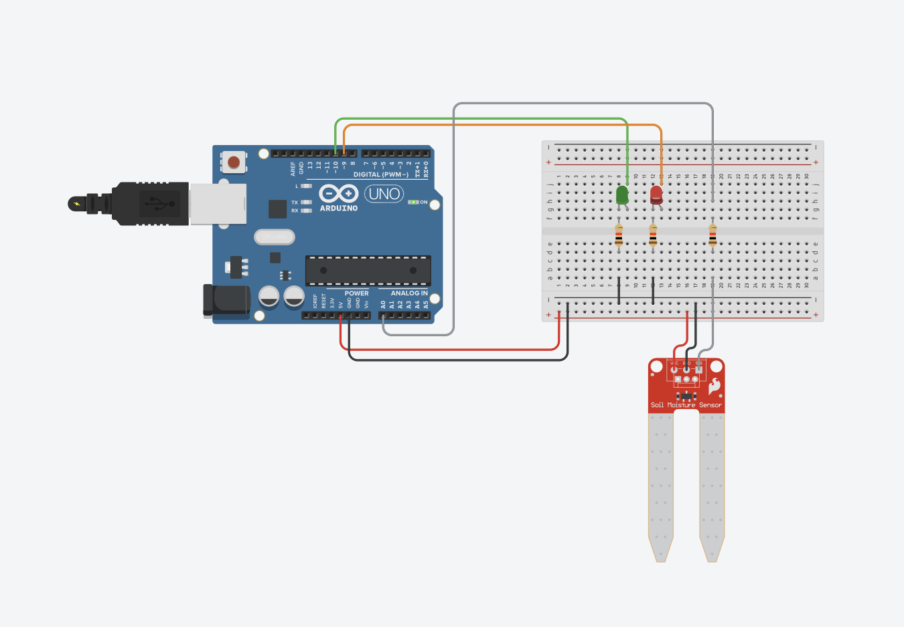
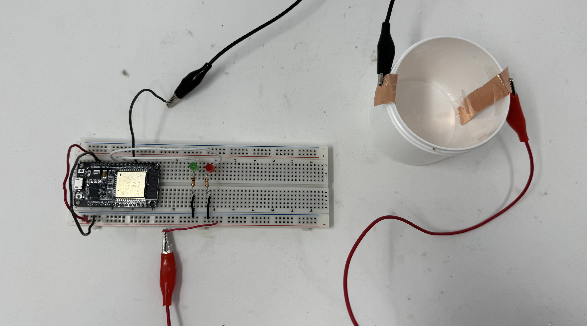
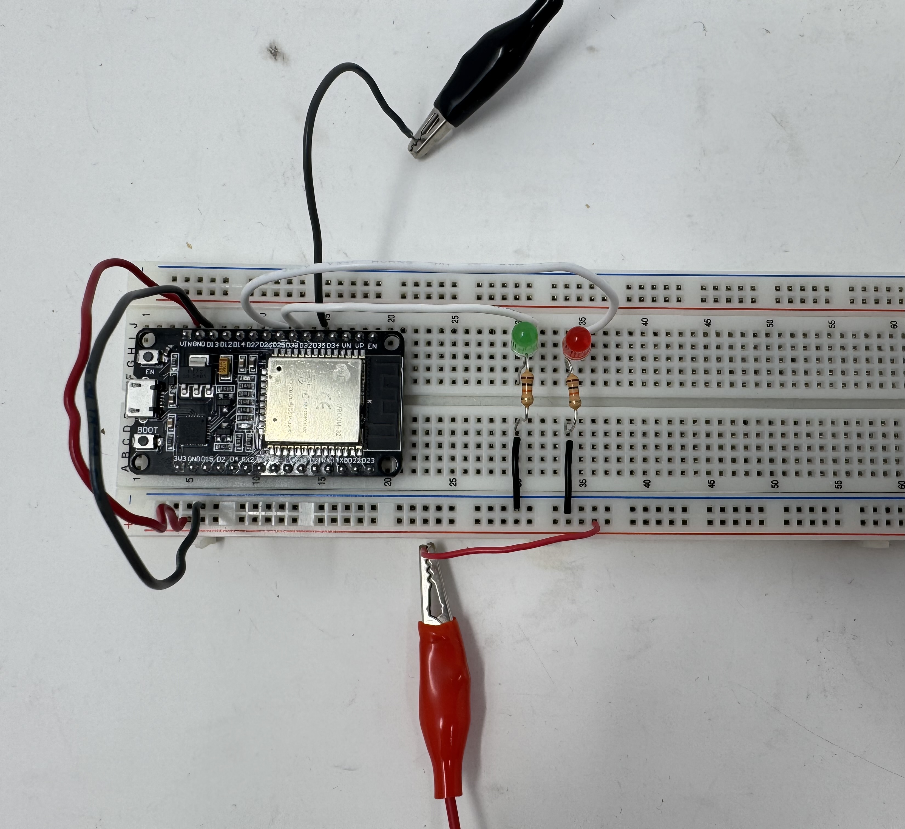
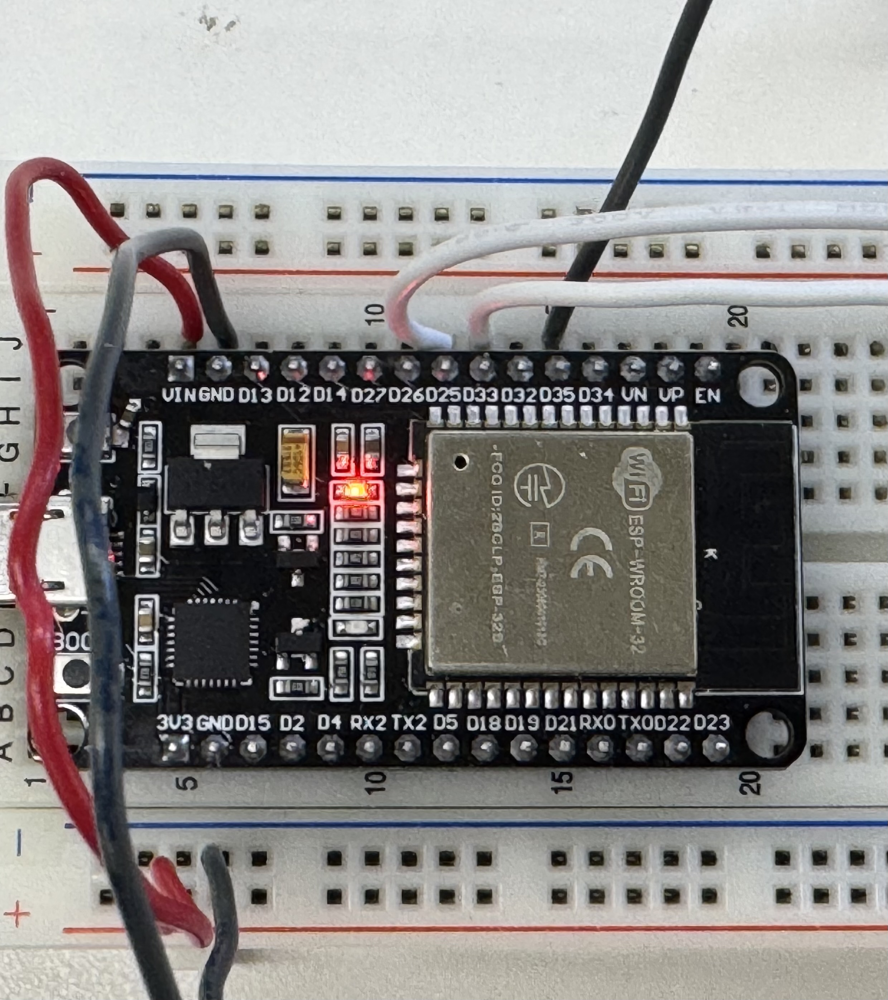
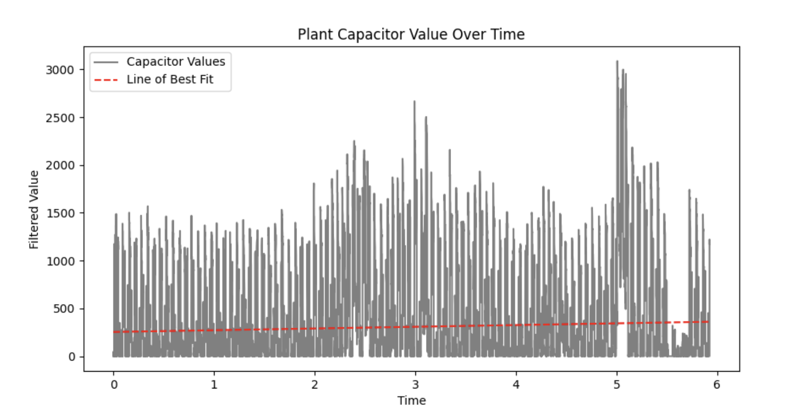
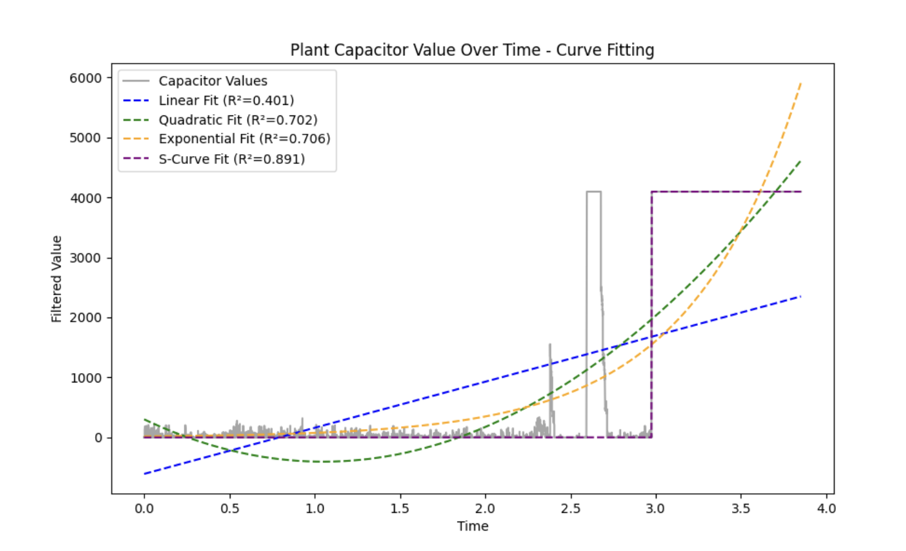
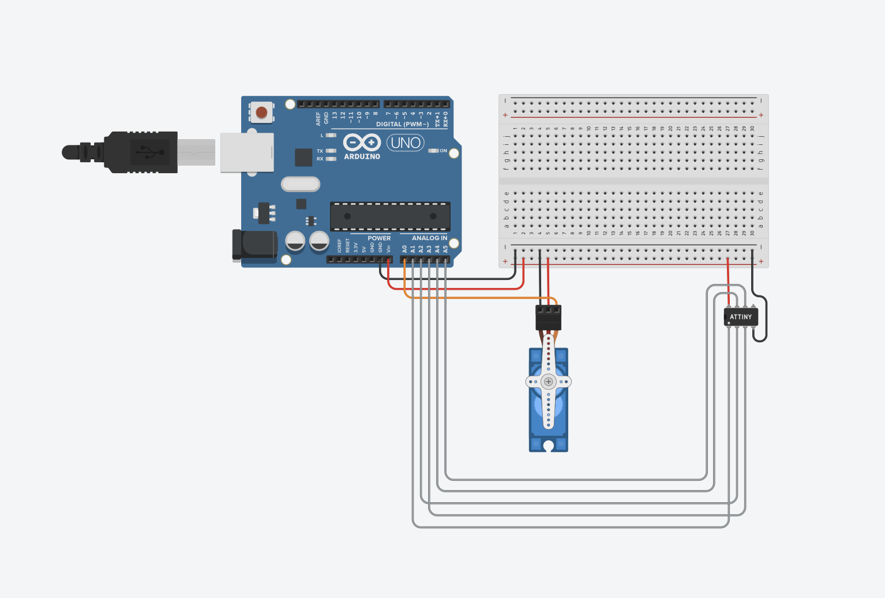
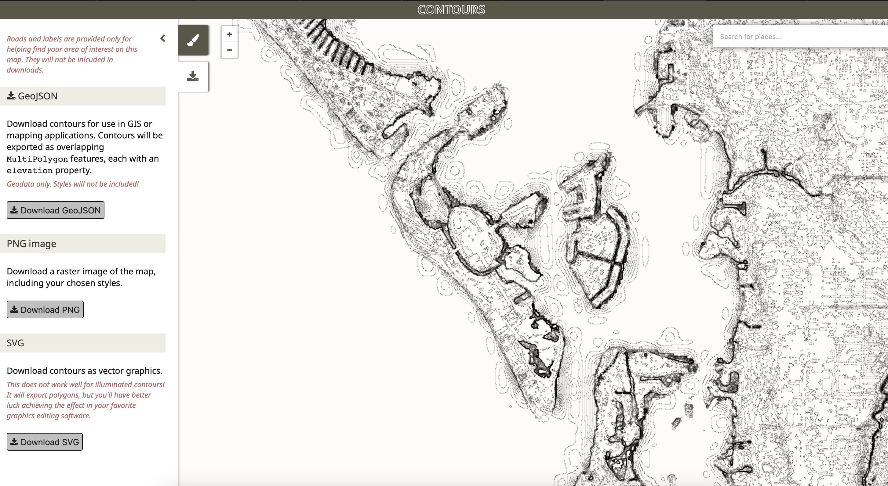
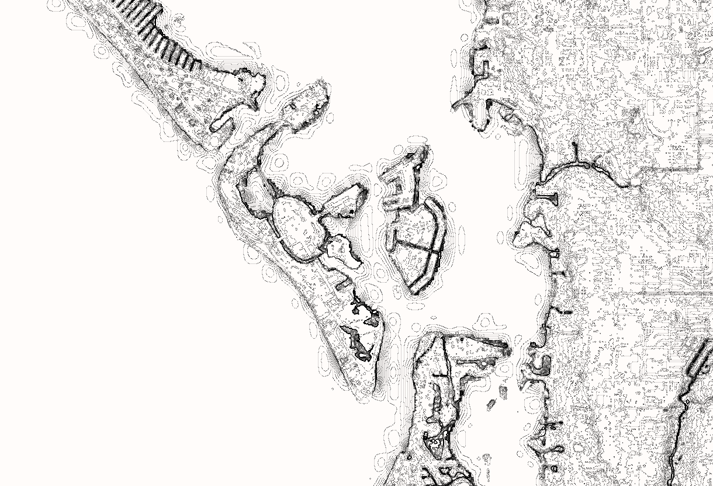
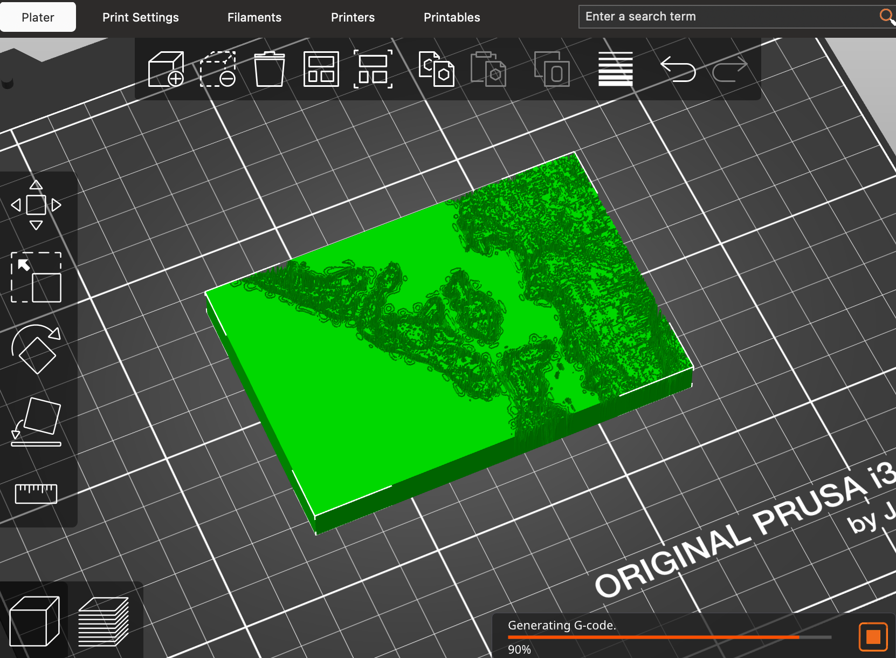

<div class="textcontainer">
<p class="margin"> </p>
<h3>Week 6: Electronic Inputs</h3>
<p><br></p>
Shown below are my two main deliverables for this week: a capacitive plant waterer and a RFID security scanner!
<p><br></p>
<div class="video-container">
<video controls>
<source src="part1_final1.mp4" type="video/mp4">
Your browser does not support the video tag.
</video>
<video controls>
<source src="part2_final.mp4" type="video/mp4">
Your browser does not support the video tag.
</video>
</div>
<p><br></p>
<h4>Assignment 1: Plant Watering Capactive Sensor</h4>
We're asked to make a capacitive sensor to measure a physical quantity with a microcontroller.
In addition to this, we are to include a schematic of the sensor and calibrate it by plotting points on the graph.
Finally, we should discuss the relationship between the signals recorded by the microcontroller and the physical quantities being measured.
<p><br></p>
I suck at keeping plants alive, so I thought, 'why not sense when I need to water it?'.
The goal is to have a capacitor that senses soil moisture water, where the water acts as a dieletric.
When the soil is saturated, a green LED will light up, indicating the plant is good and does not need anymore water.
Here is my Schematic, made in <a href="https://www.tinkercad.com/things/kpKNkKsL4AA-phys70-week-6-part-1">Tinkercad</a>.
<p><br></p>
<div class="img-container">
<p></p>
<video class="center_image" width="400" height="200" controls>
<source src="part1_schematic.mp4" type="video/mp4">
Your browser does not support the video tag.
</video>
</div>
<p><br></p>
Here is my setup in real-life, followed by the list of materials:
<ol>
<li>ESP 32 microcontroller</li>
<li>Breadboard</li>
<li>2 LEDs (one red, one green)</li>
<li>2 Resistors (1k<span>&#8486;</span> is sufficient)</li>
<li>8 wires</li>
<li>2 alligator clips</li>
<li>Cup (plastic or recyclable paper)</li>
<li>2 strips of copper foil, at least as long as height of cup</li>
<li>Tape (to secure the foil to the outside of the cup)</li>
<li>Water (can store in another cup to then pour into our copper-foiled cup)</li>
</ol>
<p><br></p>
<p><br></p>
<p></p>
<p><br></p>
<div class="img-container">
<p></p>
<p></p>
</div>
<p><br></p>
I connected the ESP32 to my computer and opened up Arduino IDE to begin coding. Feel free to copy-paste
into your own IDE, changing the pin numbers as you see fit:
<p><br></p>
<div class="code-box">
<pre><code class="language-arduino">
// PHYS70 Week 6: Plant Capacitor
//
// variables
const int redLED = 25;
const int greenLED = 33;
const int capacitor = 35;
int val;
void setup()
{
pinMode(redLED, OUTPUT);
pinMode(greenLED, OUTPUT);
pinMode(capacitor, INPUT);
Serial.begin(115200);
}
void loop()
{
val = analogRead(capacitor);
Serial.println(val);
// capacitor goes up to 4095
if (val > 4000) {
digitalWrite(redLED, LOW);
digitalWrite(greenLED, HIGH);
} else {
digitalWrite(redLED, HIGH);
digitalWrite(greenLED, LOW);
}
}
</code></pre>
</div>
<p><br></p>
Once written, I uploaded the code to the ESP32 using a cable, then let it run. Here is a movie of it
Feel free to also add some dirt and plants. You may need to not stuff the copper too deep into
the cup so that it can distinguish between dirt and water (where
the water comes in from the top), but the code and methodology is the same.
<p><br></p>
<video class="center_image" width="640" height="360" controls>
<source src="part1_final.mp4" type="video/mp4">
Your browser does not support the video tag.
</video>
<p><br></p>
How do the signals collected relate to the physical quantity being measured?
The physical quantity we're measuring is the amount of water being poured in, and the signal
we collect is the 'capacitance' from the alligator clip.
<p><br></p>
See the first photo below. This is where I pour a small amount of water in (x-axis time,
y-axis our read value). It appears that there is a linear relationship (red line of best fit,
which are my 'plotted points' that I go off of for this analysis).
Generally, the more water being poured in, the more of a dielectric
there is between the two copper plates. This increases the area of the copper foil that
can be used to store a charge, thereby increasing the capacitance
and subsequently our reading.
<p><br></p>
There appears to be a lot of noise/amplitude between
values. This might be because during the pour, only part of the copper is ever covered, so
part of the overlap between the copper plates interacts with air, which has a low dielectric constant.
<p><br></p>
<p></p>
<p><br></p>
The next photo is shown when I pour more water in (roughly same rate).
It appears that the points suddenly 'speed jump' to the maximum possible read-in value of 4095.
After plotting several points/lines of best fit, I found that an S-logistic curve fit best,
followed by a quadratic and/or exponential curve. Why is this? It turns out that water has a high dielectric constant. This number
measures how much a material will increase the capacitance of a capacitor relative to a vacuum.
For reference, air is about 1, but water is nearly 80! Because of this high constant,
just a little bit more water will cause the capacitance to suddenly spike.
<p><br></p>
<p></p>
<p><br></p>
<h4>Assignment 2: RFID Security Sensor</h4>
We're asked to configure and use another sensor (temperature, microphone, etc.) and
include at least one output device. Similar to Part 1, we are to include a schematic of the sensor,
calibrate it, and discuss the relationship between the signals recorded
by the microcontroller and the physical quantities being measured.
<p><br></p>
For this part, I wanted to mimic badge scanning using a RFID card scanner. When a badge is
scanned, if the user is authorized, a servo will twist to unlock a barrier.
Here is my Schematic, made in <a href="https://www.tinkercad.com/things/jwAF6ck27Xz-phys-70-week-6-part-2">Tinkercad</a>.
Tinkercad does not have a RFID scanner, but in looking up <a href="https://www.youtube.com/watch?v=cFK87MJ96A8&t=291s">this tutorial</a>,
I found that the RFID scanner needs only a VIN, GND, and 5 sensors to plug in. Therefore, just for the purposes of this
Schematic, I mimicked the scanner with a microcontroller and plugged in VIN, GND, and 5 wires in gray.
<p><br></p>
<p></p>
<p><br></p>
Here is my setup in real-life, followed by the list of materials:
<ol>
<li>ESP 32 microcontroller</li>
<li>2 breadboards connected/clipped together (ESP32 needs more room on both sides)</li>
<li>RFID-RC522 Scanning Board</li>
<li>1-2 PICCs (Proximity Integrated Circuit Cards)</li>
<li>Servo</li>
<li>Stick/dowel or something to attach to the servo</li>
<li>1 Resistor (1k<span>&#8486;</span> is sufficient)</li>
<li>An insane number of wires</li>
</ol>
<p><br></p>
<div class="img-container">
<img src="part2_setup1.png">
<img src="part2_setup2.png">
</div>
<p><br></p>
PLEASE NOTE that while you can plug the RFID into the breadboard, to really ensure the signals
get through, you can use wires with connectors on their ends and plug those
connectors into the RFID's wire inputs. The picture above shows how I did that.
Also note that some bug I've gotten is an 'estptool' internal error with Arduino IDE when
trying to upload code. This is because of the baud rate. Try setting it to 9600 or 115200,
and in the serial monitor adjust it to that value as well.
<p><br></p>
I then connected the ESP32 to my computer and opened up Arduino IDE to begin coding. You will need
to make one change: for your cards, you'll want to read its printed-out HEX value from the
Serial monitor when you initially scan it, then add its value to the approvedUIDs array in the code.
This way, when you scan it next time, you'll be authorized!
Feel free to copy-paste into your own IDE, changing the pin numbers as you see fit:
<p><br></p>
<div class="code-box">
<pre><code class="language-arduino">
// PHYS70 Week 6: RFID Security Scanner
// https://toluademola.github.io/PS70-Tolu-Ademola/13_finalproject/index.html
// https://randomnerdtutorials.com/security-access-using-mfrc522-rfid-reader-with-arduino/
// Imports and Installs
#include <SPI.h> // Serial Peripheral Interface, allows comm between RFID-RC522 and ESP-32
#include <MFRC522.h> // Library for RFID-RC522; Arduino IDE => extensions => install MFRC522
#include <ESP32Servo.h> // Library to control servo motor
// Variables
// ESP-32 pin numberings here do matter!
// See also File => Examples => MFRC522 for RFID example code
#define SS_PIN 5
#define RST_PIN 27
#define SCK_PIN 18
#define MISO_PIN 19
#define MOSI_PIN 23
const int servoPin = 22;
MFRC522 rfid(SS_PIN, RST_PIN);
Servo myServo;
// array of approved IDs
// edit to your list of IDs, which you can determine by looking at the printed value when the card is scanned
const byte approvedUIDs[][4] = {{0xDE, 0xAD, 0xBE, 0xEF}, {0x87, 0xBB, 0x2A, 0x7B}};
const int numApprovedUIDs = sizeof(approvedUIDs) / sizeof(approvedUIDs[0]);
// Setup Function
void setup() {
Serial.begin(115200);
SPI.begin(SCK_PIN, MISO_PIN, MOSI_PIN); // Init SPI bus
rfid.PCD_Init(); // Init MFRC522
myServo.attach(servoPin);
myServo.write(55);
Serial.println(F("This code scan the MIFARE Classsic NUID."));
}
// Loop Function
void loop() {
// Reset the loop if no new card present on the sensor/reader.
// This saves the entire process when idle.
if ( ! rfid.PICC_IsNewCardPresent()) {
return;
}
// Verify if the NUID has been readed
if ( ! rfid.PICC_ReadCardSerial()) {
return;
}
// Check is the PICC of Classic MIFARE type
Serial.print(F("PICC type: "));
MFRC522::PICC_Type piccType = rfid.PICC_GetType(rfid.uid.sak);
Serial.println(rfid.PICC_GetTypeName(piccType));
if (piccType != MFRC522::PICC_TYPE_MIFARE_MINI &&
piccType != MFRC522::PICC_TYPE_MIFARE_1K &&
piccType != MFRC522::PICC_TYPE_MIFARE_4K) {
Serial.println(F("Your tag is not of type MIFARE Classic."));
return;
}
// Print out some of card data if of correct type
Serial.println(F("The NUID tag is:"));
Serial.print(F("In hex: "));
printHex(rfid.uid.uidByte, rfid.uid.size);
Serial.println();
Serial.print(F("In dec: "));
printDec(rfid.uid.uidByte, rfid.uid.size);
Serial.println();
// Is this an approved card?
bool approved = false;
for (int i = 0; i &lt; numApprovedUIDs; i++) {
if (memcmp(rfid.uid.uidByte, approvedUIDs[i], 4) == 0) {
approved = true;
break;
}
}
// If it is an approved card...
// move servo up to unblock barrier
// after a few seconds, reset it
if (approved) {
Serial.println(F("Approved card. Go forth, wizard."));
myServo.write(145);
delay(2000);
myServo.write(55);
} else {
Serial.println(F("Unapproved card. You shall not pass!"));
}
// Halt PICC and stop encryption on PCD
rfid.PICC_HaltA();
rfid.PCD_StopCrypto1();
}
// Helper function
// Dump a byte array as hex values to Serial.
void printHex(byte &ast;buffer, byte bufferSize) {
for (byte i = 0; i &lt; bufferSize; i++) {
Serial.print(buffer[i] &gt 0x10 ? " 0" : " ");
Serial.print(buffer[i], HEX);
}
}
// Helper function
// Dump a byte array as dec values to Serial
void printDec(byte &ast;buffer, byte bufferSize) {
for (byte i = 0; i &lt; bufferSize; i++) {
Serial.print(' ');
Serial.print(buffer[i], DEC);
}
}
</code></pre>
</div>
<p><br></p>
Once written, I uploaded the code to the ESP32 using a cable, then let it run. Here is a movie of it.
One has a card whose hex representation is authorized (ie. its value is stored in the code), and the other is not.
<p><br></p>
<video class="center_image" width="640" height="360" controls>
<source src="part2_final.mp4" type="video/mp4">
Your browser does not support the video tag.
</video>
<p><br></p>
Feel free to also edit the printed statements in the code that occur when one is authorized or declined.
Or, you know, just keep it as it is written...
<p><br></p>
<p><br></p>
I talked to Nathan and we agreed that there wouldn't really be a need to graph the signal
strength here. Nevertheless, I think this was a fun second project!
<p><br></p>
<h4>Part 3: CAD Files for CNC Week</h4>
We were asked to prepare CAD files for CNC week.
I decided to find a 3D STL files so I could mill out a (2.5D) shape.
I want to CNC mill a topographic map of my hometown, and may
also optionally CNC the handle I did from Week 5. This part
just focuses on the former, and its STL file is available by
clicking the download button on this page.
<p><br></p>
This took longer thaan I wish to admit, namely because I had
to go through half-a-dozen countour mapping sites to find one that is free and works at the scale I wanted. Here
are the steps I took:
<ol>
<li>Open on the browser <a href="https://contours.axismaps.com/#12/27.9885/86.9233">contour axis mapping</a></li>
<li>Move the window do your desired area, then adjust the countor-granularity parameters for it to generate</li>
<li>Download as a .svg</li>
<li>Use <a href="https://svg2stl.com">this link</a> to convert the .svg to an STL file</li>
</ol>
<p><br></p>
<div class="img-container">
<p></p>
<p></p>
</div>
<p><br></p>
Here is the result when the STL file is imported into PrusaSlicer. If, for some reason this
STL file does not do well in the CNC machine, I will resort to milling my project parts, which
are available in Week 5's download button.
<p><br></p>
<p></p>
<p><br></p>
</div>